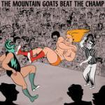

Music Reviews
-

Built to Spill Untethered Moon
The veteran Idaho natives return with their first album in six years.
Juan Edgardo Rodríguez reviews... -

Steven Wilson Hand. Cannot. Erase.
Steven Wilson returns with his fourth solo album, a masterful combination of progressive rock and beautiful melodies, of foreboding vibes with perfect serenity. And that's just in the first half of the record.
Joe Marvilli thankfully cannot erase this album from his mind... -

The Mountain Goats Beat The Champ
Longstanding storyteller John Darnielle returns with his fifteenth studio album, a concept album about semi-pro wrestling in the 1970s and 1980s.
Brad Hanford reviews... -
The-Dream Crown EP
With disappointing efforts IV Play and Royalty: The Prequel behind him, will Terius Nash be able to return to the highs of his first three albums?
Richard Petty reviews... -

Toro & Moi What For?
The latest by Chazwick Bradley Bundick is the final separation from his tether to the chillwave genre.
Joseph Moore reviews... -

Laura Marling Short Movie
Laura Marlin's latest release is a nifty little gem.
Luiza Lodder reviews... -
Ava Luna Infinite House
The eccentric Brooklyn art rock ensemble begins to integrate some definition into their third full-length, Infinite House, in which they build their compositional understanding of rhythm by giving their songs more space to maneuver.
Juan Edgardo Rodríguez reviews... -
The Soft Moon Deeper
Deeper, Luis Vasquez’s latest release, is one of the most refined post-punk albums in recent memory.
Joseph Moore reviews... -

Six Organs of Admittance Hexadic
Six Organs of Admittance’s Ben Chasny devises a systemic approach to improvisation for Hexadic which makes for an inconsistent listen.
Sean Caldwell reviews... -

Kendrick Lamar To Pimp A Butterfly
If time is kind to Kendrick Lamar, To Pimp A Butterfly will go down as his second all-time great.
Forrest Cardamenis reviews...